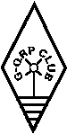

G-QRP Club: (Klubben G-QRP)
Ägnad åt lågeffektförbindelser (upp till 5 watt likströmsinput).
Klubben har tusentals medlemmar i hela världen och erbjuder ett
brett spann av tjäsnter och aktiviteter däribland
en mycket bra klubbtidning
som alla hemmabyggare kommer att tycka är mycket intressant.